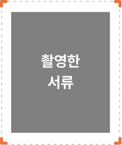

촬영 전 유의사항
서류를 이미지 영역 테두리에 맞춰 촬영해 주세요.
※ 첨부서류 내용이 선명하게 보이지 않으면 심사가 진행되지 않습니다.

- 서류가 기울어져 보이지 않도록 정면에서 촬영해 주세요.
- 서류의 접힌 부분이 없도록 최대한 평평하게 펴서 촬영해 주세요.
- 다른 서류가 같이 찍히지 않도록 주변 정리 후 첨부하려는 서류만 촬영해 주세요.
- 촬영 후에는 반드시 이미지 상태를 확인해 주세요.
※ 첨부서류 내용이 선명하게 보이지 않으면 심사가 진행되지 않습니다.